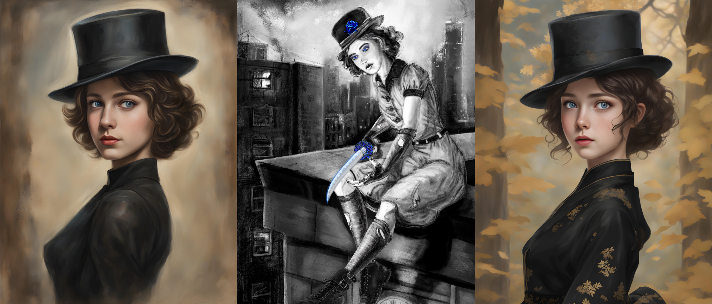
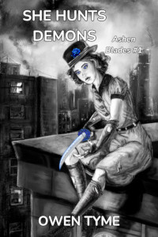

Tymely News
Character Feature: Little Miss Secret

(Left) An AI generated image of LMS at the age of 48 (1945), appearing 15 and a little tomboyish.
(Center) Ryan Johnson's illustration of LMS sitting on the edge of a rooftop for the book's cover, at the same age.
(Right) Another AI generated image, age 75 (1972), appearing 17 and a bit more mature, during a short trip to Japan.

The half-demon protagonist of She Hunts Demons has no known name, but instead a series of nicknames. Her friends call her The Boss, Little Miss Secret, Little Miss or LMS, while her enemies call her lots of unpleasant things, the least offensive and repeatable of which are half-demon brat or simply brat. She calls herself The Hunter.
At the age of three years old, her parents were murdered in front of her by a demon, so she grew up on the streets of New York City, with only her mother's familiar, Mashu'ra, to look after her.
She lives with a curse from the murderer that makes her functionally mute, by preventing her from saying anything other than, "It's a secret."
Due to the murders and the curse, she's devoted her life to exterminating demon-kind with extreme prejudice. As a result of the way a small child's mind can paper over harsh memories, she initially had no true understanding of why she hated demons so much, but the memory is brought back to her mind in the early chapters of the book, when she kills a child-eating demon, then when her private detective partner, Clayton Simmons, stumbles across the name of the killer on an investigation she had no idea was related, it all comes into sharp focus.
She suffers in silence for a time, but Simmons eventually suggests drawing what's on her mind, allowing her to tell him the story through crayon drawings. Together, they puzzle out its true meaning and she finally comes to understand the loss of her parents.
LMS is widely considered crazy by enemies and allies, alike, because she's incredibly driven and beyond stubborn. She never admits defeat and becomes incredibly dangerous when cornered. For example, when a chandelier is dropped on her, pinning her to the floor, she pulls the pin of a grenade and allows it to go off, nearly on top of herself, because if she's going to die, she may as well take some demons with her.
Aside from that, LMS is a deeply emotional individual, because emoting is one of the few ways she can communicate effectively.
She's mischievous, with a love for playing an occasional prank during idle times and loves watching the mayhem that ensues when people try to shake her hand (see below, regarding the protective spell surrounding her). Her mischievous streak becomes downright cruel when she faces demons and her pranks then become lethal or painful.
Due to the way her parents died, she has great love and compassion for humans, especially small children.
In many ways, she resembles a house cat: she moves with grace, can climb almost anything, can survive falls from extreme height, she's playful, but cruel to her prey (demons) and she even has a tail, which is normally hidden by her skirt. This is all because her mother's demon form was that of a feline.
As a half-demon, she inherited the full powers of a demon, giving her rapid healing, supernatural strength, the ability to conjure weapons to her hands from a pocket dimension inside her top hat and the fairly unique ability to teleport from shadow to shadow.
Like demons, she survives on raw life force, but unlike them, she can survive on the ambient energy of a city, without murdering humans. She's mostly incapable of digesting solid food and doesn't actually have to eat. When she does, she normally only ingests bread and water. When she goes out to eat with Simmons, she normally orders hot dogs and only eats the buns, giving the actual meat to Mashu'ra.
She has a particularly strong love of hot, buttered dinner rolls. Among all the things inside her hat is a secondary pocket dimension filled with countless fresh, warm dinner rolls, in which the flow of time has been suspended, keeping them perpetually fresh. She often gives these to victims of demon attacks, because dealing with harsh realities is often easier with a little comfort food.
Her demon powers give her Smoke, Shadow and Void magic. She also happens to be a powerful witch, giving her Fire magic, but she doesn't realize this until late in the first novel.
In addition, LMS is surrounded by a unique, sentient spell that protects her, which is what her demon-witch mother, Annmarie Nosset, transformed herself into when she died, as the means to avoid the eternal punishment that awaited her in Hell, for voluntarily choosing to become a demon. Annmarie has the ability to subtly manipulate probability to ensure LMS doesn't come to harm, causing unlikely accidents to those that would dare try. This also affects anyone that tries to touch the girl against her will. However, there are some significant caveats to how the spell works, which can't protect her from unintentional, indirect or blind attacks.
For example, in the case of the chandelier, the demon responsible had simply been waiting for the lights of the room to come on to cut the rope, without ever knowing the reasons for his orders. Another example is the case of LMS facing an angry witch. LMS tried to get rid of the girl with a warning shot, but she grazed the witch's ear, instead. The witch lost control and a whirlwind spun LMS in the air until she was violently ill.
Like Annmarie, the father of LMS is always near. When Jake Watson died, his spirit latched onto his old top hat, which LMS now wears. He dwells within the pocket dimension inside the hat as a bound ghost and his powers are integral to how it functions.
Little Miss Secret has one additional ally who's nearly always present: her mother's familiar, Mashu'ra, lives inside her hat, where he looks after her weapons for her and keeps a watchful eye on events outside, at least when he's not napping. Mashu'ra also keeps Jake company, telling him what's going on in the outside world.
In exchange for his service, LMS feeds Mashu'ra hot dogs.
Tags: ashen-blades, character-feature